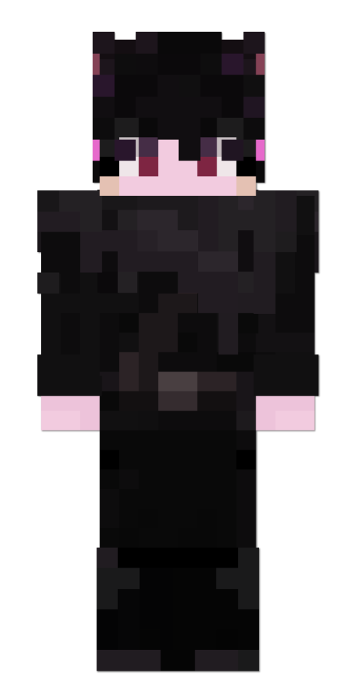
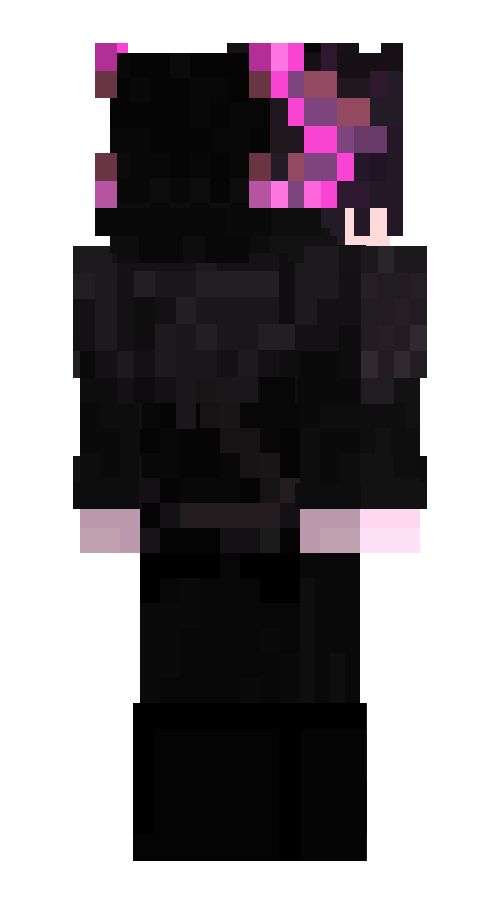

Тето
Тето — эндерксолотль. Была выброшена на Остров за несколько дней до начала повествования. Ищет своё родное королевство.
Скромная, скрытная, но очень преданная — Тето живёт ради того, чтобы служить тем, кого она считает достойным своей приверженности.
Внешность

Личность
Тето немногословна и довольно закрыта в себе. Она так же очень ценит своё личное пространство, не давая никому прикасаться к себе.
Однако, несмотря на всё это, Тето очень лояльна к тем, кому по настоящему доверяет, например Принцессе. Её главным ориентиром выступают чувство справедливости и свой пока не до конца сформировавшийся моральный компас. Тето импонируют такие добрые и честные люди как Принцесса и Беатрис, но она не переносит на дух меркантильных и эгоистичных личностей, таких как например капитан Юхав, которого она видит насквозь.
Будучи бывшим членом Королевской Стражи, она обладает хорошими боевыми навыками и отлично обращается со своим обсидиановым мечом.
Отношения
Принцесса Аквария
См. также: Принцесса Аквария#Тето
Тето очень хорошо относится к Принцессе. Её амбиции и её любовь к собственному «народу» очень напоминают аксолотлю о Королеве, и потому она неосознанно находит в служении Акварии утешение. На данный момент Тето поклялась помогать ей, и выполняет каждую её просьбу (даже помогая с такими бытовыми делами как уходом за фермой и разводом скота, по собственному желанию), а Принцесса же взамен пообещала помочь Тето с поисками и не бросать его. Бескорыстная взаимопомощь, настоящий симбиоз доброты. Основа общества, к которому стремится Принцесса.
История
Последние годы жизни Тето провела как придворный рыцарь Королевы, скрывая свой пол ради того, чтобы вступить в ряды стражи. Из-за древних традиций и законов, в Королевстве Аксолотлей на подобные должности вступать могли только мужчины. Из-за этого она постоянно обращается к себе в мужском роде, не бросая привычку даже на Острове, вдали от Королевства.
В ряды рыцарей она вступила ради того, чтобы быть ближе к Королеве своего народа и служить ей лично, а заодно иметь возможность защитить её в случае опасности. Тето питала к ней большое уважение.
Она не может вспомнить события последних дней перед появлением на Острове, и её многодневные поиски дороги назад не обвенчались успехом.
Ей часто снятся размытые образы с присутствием Королевы и потерянных воспоминаний, но эти сны всегда эфемерны и неуловимы, оставляя после себя больше вопросов, чем ответов. Тето настроена серьезно и цепляется за любой шанс найти дорогу назад, чтобы вернуться к своему правителю.
Галерея